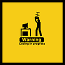

Cześć!
Nazywam się Franciszek Andruszkiewicz i jestem początkującym front-end developerem. Od czerwca 2017r. działam jako freelancer.
Swoją przygodę z programowaniem zacząłem już w wieku 15 lat. Moim autorytetem był wówczas Paweł Wimmer. W tamtym czasie na wysokim poziomie opanowałem HTML i CSS, co umożliwiło mi przygotowanie kilkunastu stron www (typu „homepage”) dla znajomych. Niestety, krótkowzroczność wieku młodzieńczego, nie pozwoliła mi przewidzieć jak pożądanym zawodem stanie się w przyszłości front-end developer i po dwóch latach hobbystycznego zajmowania się projektowaniem stron, porzuciłem to zajęcie.
Na 100% zaangażowałem się w poszerzanie wiedzy na temat programowania, obserwację rynku pracy i wyszukiwanie nowinek pojawiających się na branżowych forach, stronach i grupach tematycznych FB. W tym czasie stworzyłem także niniejsze portfolio i kilka stron internetowych, które prezentują moje obecne umiejętności. W tej chwili priorytetem dla mnie jest pełna znajomość JavaScript (Vanilla JS) i na tym teraz skupiam swoje działania.
Celami na najbliższą przyszłość i kierunkiem rozwoju jest poznanie jQuery oraz AngularJS. Ponadto pragnę opanować PHP i SQL (wraz z nimi CMS'y tj. Joomla, Word Press, Prestashop), a także narzędzia takie jak Gulp, które ułatwią i przyspieszą moją pracę. Wszystko to, w dłuższej perspektywie czasu, ma mi posłużyć do zdobycia w przyszłości kwalifikacji na full-stack developera.
Poniżej przedstawiam opis tego co umiem i z czego korzystam. W zakładce portfolio można również zobaczyć efekty niżej opisanych umiejętności.
Co umiem, z czego korzystam:
-
HTML - tagi HTML5
- semantyka i pozycjonowanie (SEO)
- Model Obiektowy (DOM)
- formularze i listingi
- elementy blokowe i liniowe
- osadzanie grafiki i multimediów
- ramki i pływające ramki
-
CSS - kaskadowość i dziedziczenie
- media queries (RWD / AWD)
- Model Obiektowy (DOM)
- animacje i transformacje
- marginesy, odstępy, obramowanie, cieniowanie
- kolory, tło
- selektory (+ selektory pseudoklas i pseudoelementów)
- właściwości tekstu i czcionek
- wyświetlanie i pozycjonowanie
- jednostki miary i rozmiary
-
JS / jQ - operatory (przypisania, porównania, logiczne)
- instrukcje warunkowe i pętle
- funkcje
- tablice i obiekty
- obsługa zdarzeń i elementów strony
- RegExp (podstawy)
-
Do pracy używam:  - Joomla!
- Bootstrap
- LESS
- Github (podstawy)
- BEM
- Brackets + plg Emmet
- Photoshop (tworzenie elementów strony, cięcie grafiki)
- W3C Validator
- Inspirują, pomagają, uczą mnie:
- Tomasz Jakut ( Comandeer)
- Damian Wielgosik ( Kodu.je, Ferrante)
- Cris Coyier & CSS-Tricks
- Awwwards
- użytkownicy Front-end: pierwsza praca w HTML5, CSS3 i JavaScript , na których błędach dużo się uczę :)
Ponadto...
To nie wszystko!
Znajdziesz mnie również na:
Portfolio
Bling bling garage (komercyjne)
Strona wykonana od podstaw (własny, pusty szablon) w Joomla!
Wykorzystano:
M-Team Biuro rachunkowe (komercyjne)
Strona wykonana od podstaw (własny, pusty szablon) w Joomla!
Strona zawiera autorski slider wyświetlający tekst na stronie głównej.
Wykorzystano:
WSM (komercyjne, w trakcie)
Strona wykonana od podstaw (własny, pusty szablon) w Joomla!
Strona zawiera autorski slider wyświetlający obrazy na stronie głównej.
Wykorzystano:
Hair Salon (aktualizacja 13.09.2017)
Cięcie PSD
Wykorzystano:
Portfolio andfra
Najświeższy projekt wykonany od podstaw.
Wykorzystano:
kod

Simon Say v0.9
Popularna gra wykonana od podstaw.
Pomysł wymaga dopracowania. Obecnie komputer wskazuje ostatni wylosowany element, a nie wszystkie elementy wylosowane
kolejno po sobie.
Wykorzystano:
Kontakt
- tel: +48 886 552 562
- e-mail: fandruszkiewicz[at]gmail.com
-
Skanuj kod lub dotknij: